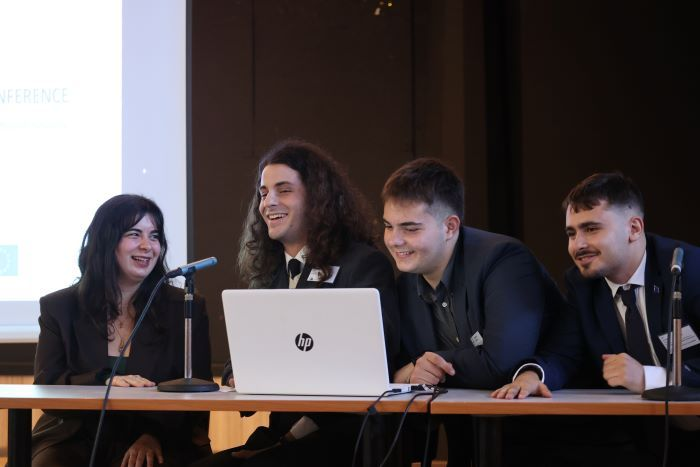
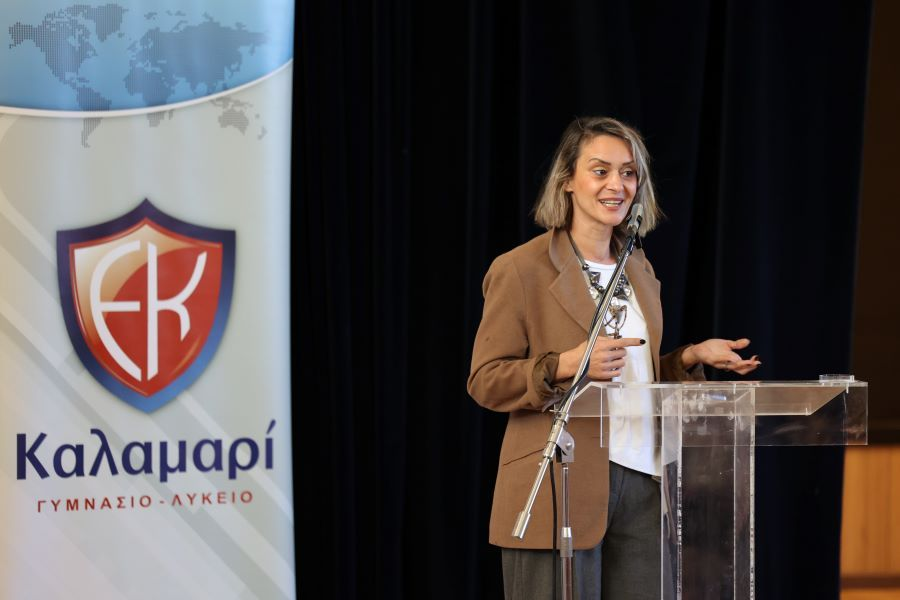
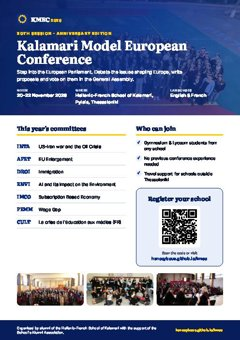

💬
Real dialogue
A safe space to exchange views and express what you believe. In a time of constant polarisation, finding common ground matters more than ever.
20th Session · Anniversary Edition
Step into the European Parliament. Debate the issues shaping Europe, write real proposals and vote on them, with around 170 students from across Greece.
About KMEC
KMEC is a mostly English-speaking student conference that simulates how the European Parliament works. It is organised by alumni of the Hellenic-French School of Kalamari, with the support of the School's Alumni Association.
Delegates tackle questions of equality and of social, political, cultural and environmental policy, with a focus on geopolitics, human rights and sustainable development.
It is open to Gymnasium and Lyceum students from Kalamari, from other schools in Central Macedonia, and from across Greece. For many, it is their very first conference.


How it works
Delegates are split into committees, each with its own topic of European interest.
Guided by experienced chairs, you research, discuss and listen to other points of view.
Through productive dialogue, each committee agrees on proposals to tackle a critical issue for Europe.
Committees present their proposals, give constructive criticism on others', and vote, just like the European Parliament.
Committees
Six committees work in English and one in French, each led by experienced chairs. The stars show how demanding each topic is, so you can pick the one that suits you.
Programme
Provisional The final timetable will be sent to participating schools before the conference.
Resources
Guides to help you get ready, whether it's your first conference or you're chairing a committee. All files are PDFs you can read in the browser or download.
All guides in this section are materials of the European Youth Parliament (EYP), shared here for training purposes. All rights remain with the EYP.
Why we do it
A safe space to exchange views and express what you believe. In a time of constant polarisation, finding common ground matters more than ever.
Sharpen your judgement by examining issues that affect young people directly.
Learn about current issues facing Europe, Greece and you, and practise researching and debating them.
Build analytical skills by searching for solutions and proposals to pressing social issues.
Practise your English and French in a real setting, with real stakes.
Take part
Gymnasium and Lyceum students, from any school, with or without conference experience. Come as a delegate and represent your committee.
Bring a group from your school. Teachers accompany their students and are welcome throughout the conference.
Older students and alumni help run the conference as chairs, members of the presidency, or reporters on the press team.
Interested in bringing your school to the 20th KMEC? Register below and the organising committee will be in touch.
Register your school
Print our A4 poster for your noticeboard or share it with students. The QR code takes them straight to this site.
Registration
One form per school, filled in by the accompanying teacher. Tell us how many students you would like to bring and which languages they prefer. We will confirm places by email.
Good to know
€10 per delegate
The same for every delegate, whichever school they come from.
Formal, EYP style
The same as at European Youth Parliament sessions, though a slightly more casual look is fine.
2 meal breaks
Two long breaks with food, plus shorter breaks with coffee, juice and snacks.
Issued by EYP
Every delegate receives certificates issued by the European Youth Parliament.
Our story
KMEC began as an initiative of Lyceum students, working with alumni, to introduce younger students to English-speaking student conferences. Over the years it has grown into a regional event, with guest schools from Thessaloniki, Soufli and Alexandroupoli, and official support from the European Parliament Liaison Office in Greece.
Full archive on the school website: kalamari.gr/kmec ↗
Gallery
Venue
Georgikis Scholis Avenue 44
555 35 Pylaia, Thessaloniki, Greece
Questions
No. KMEC is designed as a first conference experience. Older students and alumni chair the committees and guide new delegates through the procedure.
Mostly English. There are six English-speaking committees and one French-speaking committee.
Gymnasium and Lyceum students, from the Hellenic-French School of Kalamari and from any other school, in Central Macedonia or further afield.
The participation fee is €10 per delegate.
The dress code is the same as at European Youth Parliament sessions: formal clothing, though a slightly more casual look is fine.
Yes. There are two long breaks with food, plus shorter breaks with coffee, juice and snacks.
Yes. Every delegate receives certificates issued by the European Youth Parliament (EYP).
Issues that matter for Europe: equality, and social, political, cultural and environmental questions, with emphasis on geopolitics, human rights and sustainable development. See this year's seven topics in the Committees section.
Yes, and we especially want you to. This year we aim to partly cover travel and accommodation for students from schools outside the city. Contact us to find out more.
The accompanying teacher fills in the registration form above, once per school. We then confirm places and send the next steps by email.
Contact
Questions, registrations or partnership ideas? Write to any of us.
With the support of